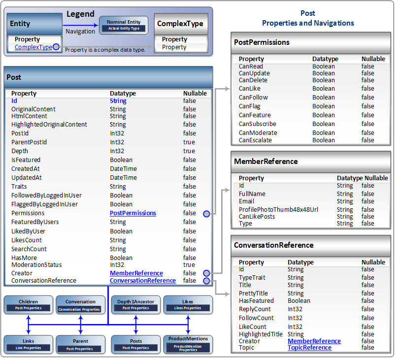

This section documents SAP Jam Communities SAP Jam Communities API calls that involve Posts.

The Post entity
Purpose: The Post entity provides information on a particular posted message
(Post) in a conversation between one or more Members about a specific topic
(product).
Properties: The Post properties are:
- Id: The unique
ID of the Post.
- OriginalContent: [String] The content of the post that the specified Post
was in response to.
- HtmlContent: [String] The HTML content of the specified Post.
- HighlightedOriginalContent: [String] Any segments of the original Post
that were highlighted.
- PostId: [Int32] The unique
ID of the specified Post.
- ParentPostId: [Int32] The unique
ID of the parent post of the specified Post.
- Depth: [Int32] The ordinal number in the hierarchy of responses to the
original post of this specified Post.
- IsFeatured: [Boolean] True if the specified Post has been featured.
- CreatedAt: [DateTime] The date and time that the specified Post was
created.
- UpdatedAt: [DateTime] The date and time that the specified Post was last
modified.
- Traits: [String] The characteristics of the specified Post.
- FollowedByLoggedInUser: [Boolean] True if the specified Post is being
followed by a known user with an account with the SAP Jam Communities
service.
- FlaggedByLoggedInUser: [Boolean] True if the specified Post has been
flagged by a known user with an account with the SAP Jam Communities
service.
- Permissions: [ComplexType] PostPermissions set for the specified
Post.
- FeaturedByUser: [String] The username of the user who has featured the
specified Post.
- LikedByUser: [Boolean] True if the specified Post has been liked.
- LikesCount: [String] A count of the number of likes that the specified
Post has received.
- SearchCount: [String] A count of the number of search in which the
specified Post has been listed as a result.
- HasMore: [Boolean] True if the specified Post has more content than is
shown in the initial Post content.
- ModerationStatus: [Int32] The type of moderation that the specified Post
is subject to.
- Creator: [ComplexType] MemberReference data on the Member that created
the specified Post.
- ConversationReference: [ComplexType] ConversationReference data on the
conversation of which the specified Post is a part.
Navigations: The Post entity provides navigations to:
- Children: [Post] to provide access to information on the posts sent in
reply to the specified Post.
- Conversation: [Conversation] to provide access to information on the
Conversation in which the specified Post appears.
- Depth1Ancestor: [Post] to provide access to information on the post that
immediatedly preceded the specified Post in the thread of the conversation.
- Likes: [Likes] to provide access to information on the Members who have
"liked" the specified Post.
- Links: [Link] to provide access to information on all Links in the
specified Post.
- Parent: [Post] to provide access to information on the Post to which the
specified Post is a response.
- Posts: [Post] to provide access to information on the Posts that are
related to the specified Post.
- ProductMentions: [ProductMentions] to provide access to information on
any ProductMentions in the specified Post.